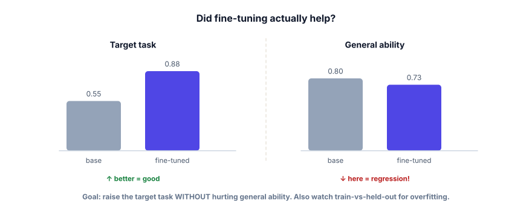

Evaluating a fine-tune
A fine-tune that feels better is worthless; you need proof. And the dangerous failure isn’t obvious badness — it’s a model that aced your task while quietly getting worse at everything else. This lesson is how to know, with numbers, whether you actually improved things.
Two questions every fine-tune must answer
After training, ask: (1) Did it get better at the target task? and (2) Did it get worse at anything else? The first is obvious; the second is where teams get burned. Fine-tuning hard on a narrow task can cause catastrophic forgetting — the model improves on your task but regresses on general ability (grammar, reasoning, refusing bad requests). You only catch this by measuring both, against the original base model, on data the model never trained on.

You evaluate against a baseline — the original base model — on a held-out set (examples never used in training). Measure a task metric (accuracy, exact match, or an LLM-as-judge score) and a general-ability check (a few diverse prompts or a small benchmark). Watch for overfitting (great on train, poor on held-out) and regression / catastrophic forgetting (better on the task, worse generally).
Evaluating a fine-tune is like checking whether extra maths tuition helped a student. You don't ask the tutor; you give the student a test they haven't seen. You also check they didn't forget how to read while cramming maths. The analogy breaks because a student's school report covers many subjects for free; for a model, you only find out what got worse if you built a test for it.
The minimum honest evaluation: score both models on the same held-out task, and sanity-check general ability. Never deploy a fine-tune you didn’t compare to the base.
def accuracy(model, examples):
correct = 0
for ex in examples:
out = generate(model, ex["input"])
if matches(out, ex["expected"]): # exact match, regex, or LLM-judge
correct += 1
return correct / len(examples)
held_out = load("val.jsonl") # NEVER trained on
general = load("general_probe.jsonl") # diverse, off-task prompts
print("target task — base:", accuracy(base_model, held_out))
print("target task — tuned:", accuracy(tuned_model, held_out)) # should be higher
print("general — base:", accuracy(base_model, general))
print("general — tuned:", accuracy(tuned_model, general)) # should NOT be much lowerIf the target task rose and general ability held, ship it. If general ability dropped, you over-fit your task — train for fewer epochs, use more/diverse data, a lower learning rate, or a smaller LoRA rank, and re-measure.
Assumptions: a held-out task set of 1,000 examples and a general-ability probe of 300 diverse prompts. Base model: 0.60 on the task, 0.82 on the probe. Fine-tune: 0.91 on the task, 0.76 on the probe.
- Task gain uncertainty. Standard error of a proportion = sqrt(p(1-p)/n). Tuned: sqrt(0.91 x 0.09 / 1,000) = 0.009, so the 95% interval is about +/-1.8 points. Base: sqrt(0.60 x 0.40 / 1,000) = 0.015, about +/-3.0 points. A 31-point gain is far outside both: real.
- General drop uncertainty. Base: sqrt(0.82 x 0.18 / 300) = 0.022. Tuned: sqrt(0.76 x 0.24 / 300) = 0.025. Standard error of the difference, treating them as independent, is about sqrt(0.022^2 + 0.025^2) = 0.033. The 6-point drop is about 1.8 standard errors: suggestive but not conclusive.
- Use a paired test. Both models answered the same 300 prompts, so count disagreements. Say 31 prompts flipped from right to wrong and 13 from wrong to right: net 18 / 300 = 6 points. McNemar's statistic = (31 - 13)^2 / (31 + 13) = 324 / 44 = 7.4, above 3.84 (the 5% threshold), so the drop is real.
- Diagnose. Read the 31 regressions. Say most are 'ignores instructions to answer in a list': the fine-tune overwrote format-following.
- Fix and re-measure. Mix 10% general instruction data into training, cut epochs from 3 to 2, and re-run both sets. Biderman et al. report LoRA forgets less than full fine-tuning, but it still forgets (arXiv 2405.09673).
- Always compare to the base model on a held-out set — “feels better” isn’t evidence.
- Measure the target task (should rise) and general ability (should not fall).
- Watch for overfitting (train ≫ held-out) and catastrophic forgetting (task up, general down).
- If general ability drops: fewer epochs, more/diverse data, lower learning rate, smaller rank — then re-measure.
- Evaluation is what turns fine-tuning from a gamble into engineering.
Your fine-tune scores 0.91 on the target task (base was 0.60) — a clear win. What must you check before celebrating?
You fine-tuned a model. What's the honest way to know it improved?
On 300 shared probe prompts, 25 flip from right to wrong after fine-tuning and 25 flip from wrong to right. What do you conclude?
1. Why must your evaluation set be held out from training, and what goes wrong if it isn’t?
2. Your fine-tune is better on the task but noticeably worse at following unrelated instructions. Name two fixes.
3. Free-text answers make exact-match scoring brittle. What’s a more robust way to score them?
▸ Show solutions & reasoning
1. Held-out data is your only honest read on generalization. If evaluation examples were in training (or near-duplicates), the model may have memorized them, so your score measures recall of seen answers, not ability on new inputs — it’ll look great and fail in production. Independence of the eval set is what makes the number trustworthy.
2. That’s catastrophic forgetting from over-specialization. Fixes: train less aggressively (fewer epochs, lower learning rate, smaller LoRA rank) so you nudge rather than overwrite; and mix in some general/diverse examples with your task data so the model retains broad ability. Then re-measure both axes.
3. Use a more semantic check: an LLM-as-judge that reads the model’s answer and the expected answer (or a rubric) and scores correctness, or check key facts/fields rather than exact strings. This tolerates valid wording differences while still catching wrong answers — it’s the heart of Track 6 (Evals), which generalizes exactly this problem.
Fine-tuning makes a permanent change to a deployed behavior, so the discipline is stricter than for a prompt tweak. Before shipping: compare against the base on a frozen held-out set, check general-ability probes, and ideally run a small regression suite — a fixed set of prompts (including edge cases and safety checks) that must not get worse. After shipping: prefer an A/B test or a careful rollout, watching real-world quality and user signals, because offline metrics never capture everything. A fine-tune that wins offline can still lose on the messiness of production traffic.
This is the moment the whole course converges: evaluating a fine-tune is the same skill as evaluating a prompt or a RAG pipeline — define what “good” means, build a held-out set, measure against a baseline, and never trust a vibe. That’s why Track 6 (Evals & Observability) is next and arguably the most important track for shipping: it turns these per-technique checks into a systematic capability. If you remember one thing from fine-tuning, let it be this: the model you can measure is the only one you can safely ship.
You can now decide on, prepare for, run, and evaluate a fine-tune. Time to pressure-test it. On to the Track 5 interview check.
labs/06_evals.pyFree and offline once set up: Ollama with qwen2.5:7b, plus the packages in labs/README.md. From the course folder:
python labs/06_evals.pyWhat to look for: Two parts apply. Lab 11 shows forgetting directly: after LoRA training on count-down, count-up loss rose from 0.1 to about 10.7, and switching the adapter off brought it straight back. Lab 06's regression gate compares two versions case by case, the same shape as 'fine-tune versus base on one held-out set'; it lists only cases that got worse, so add the reverse direction before you report wins.
Small samples: these labs use 5 to 20 cases so they run in minutes on a laptop. Where they report a rate, they print n and a 95% Wilson interval. Read them as a demonstration of the mechanism, not as a measured rate for your system; for that you need hundreds of cases and several seeds.
▸ Recorded output (our run, 2026-11-03, qwen2.5:7b on a laptop GPU)
5) Judge position bias: same pair, swapped order
How long do card refunds take? order1 picked B, order2 picked B -> FLIPPED
Return window for electronics? order1 picked B, order2 picked A -> consistent
Express shipping price? order1 picked B, order2 picked A -> consistent
When is standard shipping free? order1 picked A, order2 picked B -> consistent
Duplicate charge reversal time? order1 picked A, order2 picked B -> consistent
consistent verdicts: 4/5 = 80% (95% CI 38%-96%) correct in both orders: 2/5 = 40% (95% CI 12%-77%)
n=5 pairs is a demo, not a measurement of this judge's bias: the intervals span most of 0-100%.
Look: with no reference passage in the judge prompt, the judge has to guess which number is right.
Always judge both orders and count a win only when both agree; give the judge the reference.
6) How wide is the error bar on 12 cases?
v1 accuracy 11/12 = 92% (95% CI 65%-99%) (Wilson interval)
At n=400 the same accuracy would be roughly +/- 2.7%
{"v1_correct": 0.917, "regressions": 12, "judge_consistent": 4}Your numbers will differ a little run to run. Full log: labs/outputs. Source: labs/06_evals.py.
Warm-up. Your held-out set has 200 examples. The base scores 0.70 and the fine-tune 0.75. Roughly how big is the 95% interval on each score, and is the gain convincing?
▸ Solution
SE(0.70) = sqrt(0.7 x 0.3 / 200) = 0.032, so about +/-6.4 points. SE(0.75) = sqrt(0.75 x 0.25 / 200) = 0.031, about +/-6.0 points. The intervals overlap heavily; a 5-point gain on 200 examples isn't convincing on its own. Run a paired test on the per-example flips, or grow the set. Small eval sets make fine-tunes look better or worse at random.
Transfer. Your fine-tune passes the offline eval, but after launch users report it refuses harmless requests more often. Which eval was missing, and how do you add it?
▸ Solution
A safety and over-refusal probe. Build two sets: harmful requests the model must refuse, and borderline-but-harmless requests it must answer (medical information, security education, fiction). Score refusal rates on both for base and tuned models, and gate releases on both: refusals of harmful requests must not drop, and refusals of harmless ones must not rise beyond a set threshold. Training data often contains many refusals or hedged replies that teach over-caution, so check the dataset for that too.
Stretch. Write a release gate for fine-tuned adapters that runs in CI. List the suites, the metrics and the pass rules.
▸ Solution
Suites: (1) frozen held-out task set; (2) general-ability probe; (3) safety: must-refuse and must-answer; (4) format and contract tests (valid JSON, schema, stops correctly); (5) a slice of last month's real traffic with reference answers. Metrics: task score with confidence interval, paired flips against the current production adapter, refusal rates, format failure rate, latency and tokens per answer. Pass rules: task score not lower than production (paired test), general probe net flips not significantly negative, harmful-refusal rate not lower, harmless-refusal rate up no more than 1 point, zero format regressions. Store all outputs so failures can be read, and require human sign-off for any rule override.
Junior How do you know a fine-tune actually helped?
▸ Model answer
I compare it with the base model, and with the best prompt-only setup, on a held-out set it never trained on, using a task metric that reflects what users need. I check that the gain is bigger than the noise for the set size, ideally with a paired comparison since both models see the same examples. Then I check it didn't get worse elsewhere: a general-ability probe, safety refusals and format compliance. Only if the target improved and the guardrail metrics held do I call it a win. After launch, I confirm with an A/B test or a staged rollout.
Mid What is catastrophic forgetting and how do you detect and reduce it?
▸ Model answer
It's when training on a narrow task makes the model worse at things it used to do: following general instructions, reasoning, formatting or safety behaviour. You detect it by running probes outside the target task on both base and tuned models and comparing per prompt, not just averages. To reduce it: train less aggressively (fewer epochs, lower learning rate), use LoRA, which Biderman et al. found forgets less than full fine-tuning, mix some general instruction data into the training set, and keep the rank modest. Then re-measure both axes.
Senior Leadership wants one number to decide if the fine-tune ships. What do you give them?
▸ Model answer
I'd push back gently: one number hides trade-offs. But I can give one decision with a short scorecard behind it. The headline is the change in the business metric's proxy, for example 'resolution-quality score up 9 points (95% CI 6 to 12) versus production'. Under it, three guardrails with pass or fail: general ability held, safety refusals held, cost and latency within budget. If any guardrail fails, the answer is no regardless of the headline. Then a rollout plan: 5% traffic for a week, watching live metrics, with automatic rollback.